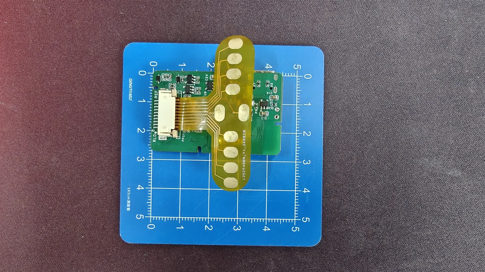

8 通道脑电采集板
ESP32-S3 + ADS1299 采集平台，从硬件结构到 BLE 数据链路。
产品概览
8 通道 BCI 开发板采用 ESP32-S3 主控与 ADS1299 采集前端，面向教学、信号采集系统研发和算法原型验证。资料中包含板卡照片、Arduino 固件、Python 桌面上位机，以及移动端工程。
本页把产品资料中的已知信息与当前源码的配置分开列出。源码中的功能说明对应本次整理的文件快照，实际使用时应核对板卡和固件版本。
| 项目 | 资料中的信息 |
|---|---|
| 采集架构 | ESP32-S3 + ADS1299，8 个采集通道 |
| 供电 | USB / 电池供电；电池规格、极性和充电方式须按实物版本确认 |
| 调试 | USB 调试；当前采集源码使用 BLE 传输 |
| 软件 | Python 桌面上位机、Android 和 iOS 工程资料 |
| 开发方向 | 采集显示、记录导出、接口开发、板卡与上位机定制 |
板卡外观


当前固件默认配置
下表来自 ESP32S3_ADS1299_EEG.ino 的常量与初始化代码。
| 配置项 | 值 | 说明 |
|---|---|---|
| 固件版本 | 1.0.0 | 由 FW_VERSION 声明 |
| 广播名称 | ESP32S3-EEG | 在 BLE 扫描中识别 |
| 采样率 | 250 SPS / 通道 | 上电默认配置 |
| PGA 增益 | ×24 | 增益代码 6 |
| 输入模式 | NORMAL | 可切换 SHORT / TEST / MVDD / TEMP |
| 公共参考 | SRB1 开启 | 源码通过 MISC1.SRB1 连接通道负输入 |
| 偏置 | BIAS 开启 | 正输入参与偏置反馈配置 |
| 导联脱落检测 | 关闭 | 可用 LOFF 命令切换 |
| 数据传输 | BLE Notify | 二进制数据 + 独立 JSON 状态 |
固件中的采样率表包含 250、500、1000、2000、4000、8000、16000 SPS；Python 界面提供 250–4000 SPS 选项。这是配置范围，不是已实测的 BLE 连续传输上限。
采集与显示流程
ADS1299 → SPI / DRDY → ESP32-S3 环形缓冲 → BLE 通知 → 上位机解析 → 显示与 CSV
- ADS1299 每次转换输出 3 字节状态和 8 路 × 3 字节样本，SPI 读取共 27 字节。
- 固件以 DRDY 中断触发采集，并使用样本序号记录采集时间轴中的缺口。
- 发送任务将连续样本装入 BLE 数据包，每包最多 10 个样本，按协商 MTU 调整。
- Python 上位机校验 CRC、将 24 位原始码换算为 µV，提供数字滤波与 CSV 记录。
选型与版本核对
| 需核对的项目 | 准备的信息 |
|---|---|
| 模拟输入 | 连接器方向、引脚编号、CH1–CH8 映射、参考与偏置定义 |
| 电源 | USB 输入要求、电池化学体系/电压/极性、保护和充电说明 |
| 外形 | PCB 版本、尺寸、安装孔、连接器与外壳配合 |
| 性能 | 采样配置、测试带宽、输入短路噪声、幅值误差、持续运行记录 |
| 交付 | 板卡、配件、软件、源码、原理图和 PCB 工程逐项确认 |
24 位是 ADC 输出位宽，不等于 24 位有效精度。当前资料没有提供完整的整板噪声、精度、续航或人体接口电气安全测试报告；芯片参数和静态截图不能替代这些实测结果。
本页资料依据
- 8通道BCI/淘宝上架资料_20261007/源文件/03_技术规格说明.txt
- 8通道BCI/程序/嵌入式程序/ESP32S3_ADS1299_EEG.ino
- 8通道BCI/程序/上位机程序/Python/eeg_host.py